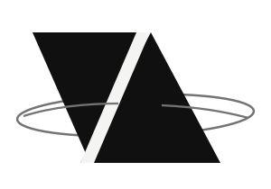

已有的视觉，不应该被重新发明。
2024 源图提取 · 2026 可编辑候选
RECONSTRUCTION / NOT APPROVED
01 / VIRTUAL AIRLINESMARK STUDY

02 / MOVAWORDMARK STUDY

03 / TEA HOUSE IN THE WOODSTYPE STUDY
图形归属修正
原始画面中的方框屋檐符号位于“自然疗养中心”识别附近，不能直接归给林中茶屋。右侧上方菱形字标的准确归属也尚未核定。这里特意保留茶屋的文字识别，不虚构一个新的官方符号。
所有候选图形均是依据 2024 年用户提供截图的可编辑恢复研究；历史源图、字体母版、出版权限和正式色彩仍需人工确认。后台的照片是已存储的 SpacePort 场景素材，不代表这些在线站点已经开放。
VIRTURA / SOURCE-FAITHFUL IDENTITY STUDYREVIEW ONLY · NOT PRODUCTION / NOT AN APPROVED VI